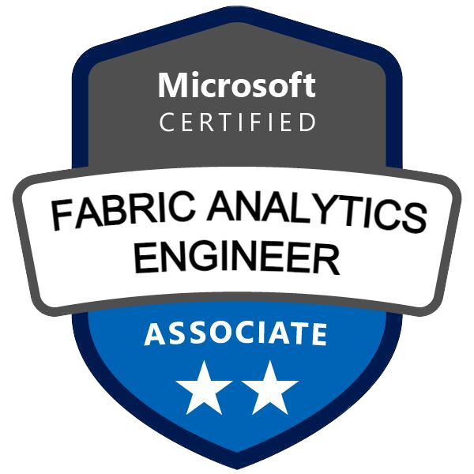
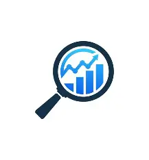

Fabric Analytics Engineer
Microsoft Certified Associate
Jack Chesney • BI Portfolio
From IT support to business intelligence and analytics engineering.
Built technical foundations through a Level 3 apprenticeship.
Supported business-critical systems and operational processes.
Achieved Distinction while developing analytics, SQL and reporting skills.
Delivering BI and reporting solutions within freight forwarding and logistics.
Developed certified freight-forwarding platform knowledge.
Earned the Microsoft Certified: Fabric Analytics Engineer Associate certification.

Microsoft Certified Associate

Distinction
Certified Professional
Power BI, Fabric and analytics